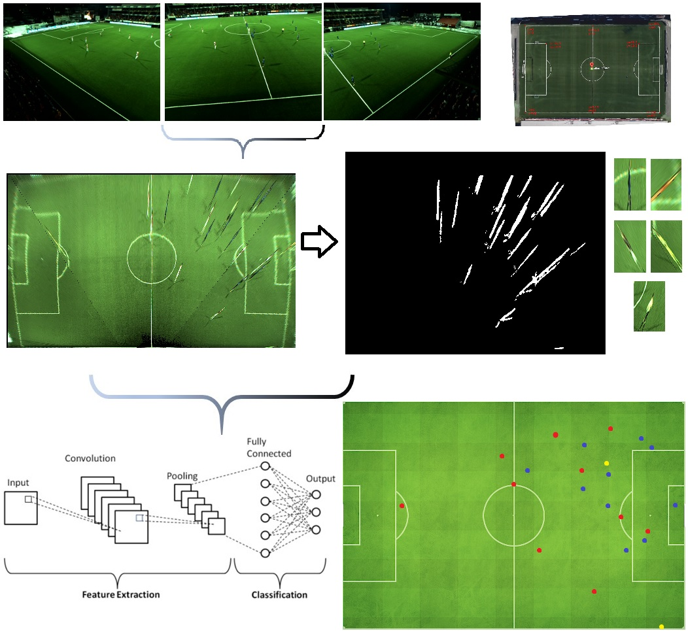

I'm a student, researcher and engineer with over 4 years of experience in software engineering. I have worked as a developer, researcher, and architect on various academic and enterprise projects, including chat, wallet management and payment, E-commerce, big data, distributed computing, machine learning, image processing, computer vision, and android solutions in B2B and B2C markets.
I am genuinely interested in Software Engineering, Distributed Architectures, Big Data, Data Mining, Machine Learning, Deep Learning, Image Processing, and Computer Vision.
I am and have always been eager to learn about new subjects especially when they are complex or require a lot of mathematics.
My current goal is to go to a top-ranking university and learn more about one or more of my interests, and do serious research and be a worthy contributor to Science and Computer Science.
Like all other software engineers and computer scientists, I have the working knowledge of various programming languages and platforms. However, I have been using Java and Python more than other languages, and Tensorflow and Spring Framework more than other frameworks.
daneshvarshayan [at] gmail [dot] com
Graduate (M.Sc.) Computer Science Student at University of Manitoba.
Education
MSc in Computer Science
University of Manitoba (Jan 2023 – Present, Winnipeg, Canada)
K. N. Toosi University of Technology (Sep 2018 – Aug 2022, Tehran, Iran)
GPA: 19.21/20 - (US CGPA: 4/4 - A+)
Thesis: Reflection Removal of In-vehicle Images (19.5/20) - Supervisor: Dr. Behrooz Nasihatkon
Experience
I have written all positions I have held on my LinkedIn page, so I encourage you to take a look at my LinkedIn page to see all the activities and job titles that I have held plus some information that I have not written here!...
Publication
The Following will be published soon!Related to Machine Learning, Deep Learning, Image Processing and Computer Vision:
- A new electrically assisted paper-based lab-on-a-chip platform for on-site barcode analysis of phenazopyridine from urine. Yasaman Razeghi, Behrooz Nasihatkon, Seyyed Shayan Daneshvar, Shahram Seidi, Mahshid Manouchehri. 2023. (Submitted to ChemistrySelect)
- Determination of three heavy metals via on-chip electromembrane extraction followed by a barcode readable assay and a linear regression RGB analysis with a customized smartphone app. Neda Rezaei, Behrooz Nasihatkon, Shahram Seidi, Shayan Daneshvar, Mina Fotouhi. 2023. (Will be submitted in a few months.)
Projects
Over the past years I have done various projects in different fields ranging from Enterprise Software Engineering and Web Development to Machine Learning & Computer Vision.
Here are some of those projects:
(I try to update the list and add the previous ones, this list is incomplete at the time!)

In this project, I had to build and train a deep learning model that could remove or decrease the
effect of the reflections of in-vehicle images in a way that the end result would look natural.
First, I used a dataset of real-world streets and road images (from CamVid dataset) and synthesized
a new dataset with reflections of various objects. Then, I came up with a CNN that
resembled the original U-Net neural network but with 3-channels for each pixel in the output.
Finally, I trained various similar networks with different depths and kernel sizes to get to the
final solution which could remove most reflections and restore the original image section behind
the reflection.
Take a look at the
repository of this project to see the abstract, and the thesis in persian (English abstract
available).
In this project, my friend and I had to take various pictures of our selves, find the face landmarks
with dlib library, and calculate the average face. Then, we had to register the faces to the
average. We had to transfer the photos using an affine and similarity matrix transform.
In the second phase, we calculated the principal components (PCA) using Singular Value Decomposition
(SVD), and found the top 10 principal components and then animated the top 10 modes.
In the third phase, we had to transfer webcam image's gesture to each other's face model (By finding
the optimum a via Least Square), and display it.

In this project, I had to detect, and classify soccer players and the referees, and finally draw
them with 3 colors on an artificial soccer field.
In order to detect soccer players, I used KNN background subtraction algorithm alongside basic
morphology techniques and the connected component algorithm. In order to classify them, I created a
dataset of players and referees and trained a simple Convolutional Neural Network (CNN).
The final model reached an accuracy of over 98%. The whole project was fast enough to detect,
classify, and visualize players and referees in a smooth fashion (10 fps on a mid-range laptop).
I also used a transform to get the exact location on a birds-eye view field. (I had to connect
footage of three video cameras, and I chose to use a transform instead of creating a panorama image)
In order to make calculations faster, I tried to use motion estimation algorithms, like optical
flow, and skip a few frame on the original video, but it was not very successful. (So, the final
code repository does not contain the code of this part!)
In this project, I had to find an interesting problem and solve it with Genetic Algorithm, Genetic
Programming, and a Multi Objective Optimization Algorithm without using any Genetic or Optimization
Algorithm libraries. I chose Text Summarization problem as I had heard about it in a previous course
(Fundamentals of Speech and Natural Language Processing), and chose NSGA-II as the second algorithm.
I implemented all three algorithms in Java utilizing OOP, and used two criteria for optimization
which were less similar sentences, and higher sentence scores.
The results for NSGA-II were very promising that the course instructor offered me a research
assistant opportunity to optimize it a little more, and publish it as a new fast genetic method for
text summarization. (Sadly, I couldn't accept as I was busy working as a research assistant,
teaching assistant, and software developer at the same time!)
In this project, I developed a full monolith website with Spring Framework, Spring Data, Spring Security, Java, MongoDB, MongoDB GridFS, JS, CSS, HTML, and Thymeleaf. You could upload and download your files anytime you wanted, and you could share the files with another person via email or shared its link. It was deployed and was available at kbox.shayandaneshvar.ir for over 3 months. It can be deployed easily to production anytime.
This project is basically a website where people could take tests in various subjects, mostly in
Software Engineering, and find out which topics they need to learn better.
Also, the admins could upload videos with different titles in various topics (Both free and paid),
where users could pay to watch a video and strengthen their skills.
I was responsible for the design, development, and deployment of the backend services, and one of my
friends was responsible for UI/UX design and development of the website.
Sadly, no sponsors were found and the project got cancelled. (So, if you are interested in the
source code, just give me an email.) Services that got completed or reached the MVP: Video Service, Auth Service, and Quiz Service.
Tech Stack:
Backend:
Service Oriented Architecture, Spring Boot, Spring MVC, Spring Data(JPA, Mongo), Spring Cloud,
Spring Security( JWT, OAuth2 ), Spring Mail, Spring AOP, Hibernate, Docker, Docker-Compose, Nginx,
MongoDB, Postgresql, H2, Lombok, MapStruct, JUnit5, Mockito, Maven.
Frontend:
JS/TS, React.js, Next.js, Tailwind, Material UI, SWR, Redux, PM2, VideoJS, NodeJS, Yarn, NPM.

In this project, we could build any sort of software we wanted. Hence, three other people and I decided to build a photo sharing sort of website.
I was responsible for the backend design, development, and deployment.
I also helped one of my friends develop two recommender systems for the website (A Categorical Filtering Recommender and A Collaborative Filtering Recommender).
I also helped my frontend developer friends use Angular's Auth Guard and save JWT on user's local storage, and developed the login page.
The project has a Microservices Architecture and is consisted of the following services: Auth(N/Z) and OAuth Service, User Service, Service Discovery Server, Gateway Service (Zuul v1), Photo Service, and an Externalized Configuration service.
The backend code is over 12K Lines of Java code alongside over 2K lines of configurations, dockerfiles, etc.
Technologies:
Frontend: Html, CSS, SASS, JS, TS, Angular 10, Angular Material, Bootstrap
Backend: Microservices Architecture, Java, Spring Boot, Spring MVC, Spring Data JPA, Spring Data Mongo, MongoDB, H2, Postgres, Docker, Maven, Spring Cloud (Eureka Discovery, Config Server, Zuul Gateway, Hystrix Circuit Breaker, Hystrix & Turbine Dashboard, Code Centric's Admin Panel, OpenFeign, Spring Cloud Security (OAuth2)), Spring Security OAuth2 Client, JWT, Spring Mail, Mockito, JUnit5, AssertJ, Swagger/OpenAPI 3, Rest API with Jackson.
Recommender System: Python 3, Sci-kit Learn, Pandas, Numpy.
Deployment: Nginx, Docker-Compose, Ubuntu 18.04
The website is still up and running, but a little slow as it is deployed on very cheap slow servers in Iran! (Over 2 Years Now!)
Source Code is private due to some important credentials, like email access, database passwords, Oauth tokens, etc. But, I am willing to share other parts. Send an Email, if you are interested!
Note: I haven't included most of my project here, feel free to take a look at my github where over 90% of the projects that I did are available. (But mostly without a documentation or a README!)